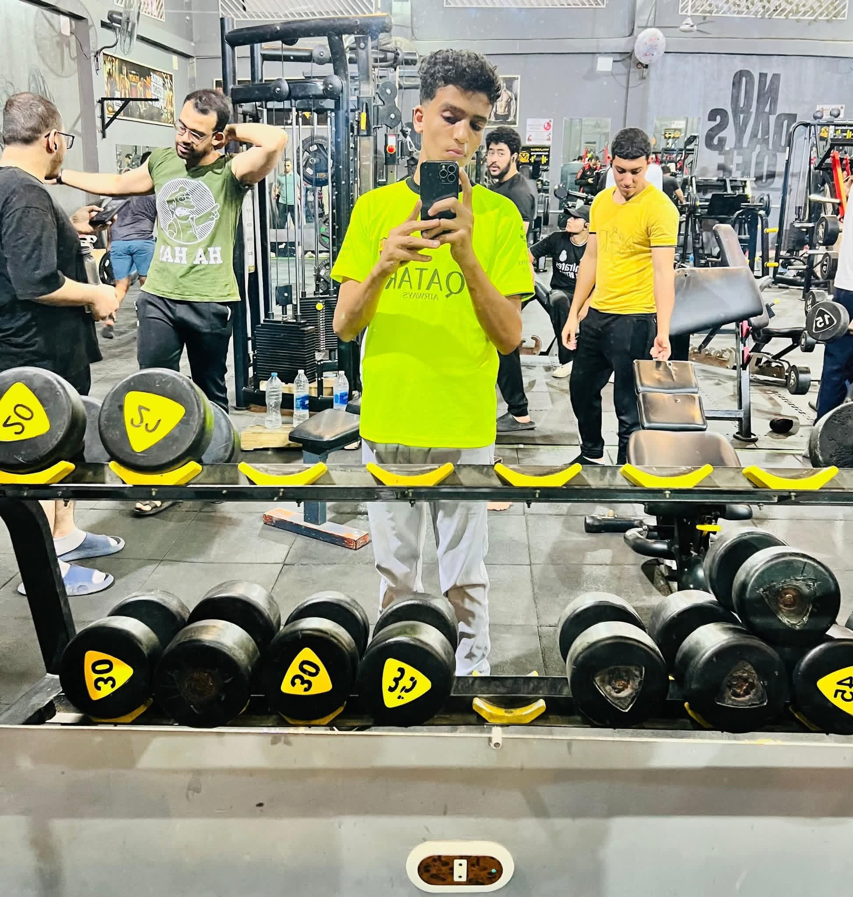

6 أكتوبر 1973
لحظة العبور
عبرت القوات المصرية قناة السويس ضمن عملية عسكرية واسعة تزامنت مع ضربة جوية وقصف مدفعي وفتح ثغرات في تحصينات خط بارليف، ثم بدأت أعمال إنشاء الكباري والمعابر.
ملحمة العبور • 1973
تجربة تفاعلية تعيد بناء قصة حرب أكتوبر 1973، من سنوات الإعداد والانتظار إلى عبور قناة السويس وتطور المعارك حتى وقف إطلاق النار.
لم تبدأ قصة أكتوبر في السادس من أكتوبر نفسه. سبقتها سنوات من إعادة بناء القوات، حرب الاستنزاف، التخطيط، التدريب، واختيار اللحظة المناسبة.
عبرت القوات المصرية قناة السويس ضمن عملية عسكرية واسعة تزامنت مع ضربة جوية وقصف مدفعي وفتح ثغرات في تحصينات خط بارليف، ثم بدأت أعمال إنشاء الكباري والمعابر.

لعبت وحدات المهندسين دوراً محورياً في إنشاء المعابر ونقل القوات والمعدات إلى الضفة الشرقية.

توسعت رؤوس الكباري المصرية وتم نقل أعداد كبيرة من القوات والمعدات إلى شرق القناة.
استعرض المحطات الرئيسية من بداية الحرب حتى تطورات وقف إطلاق النار في أواخر أكتوبر.
بدأت العملية بهجوم جوي وقصف مدفعي، ثم عبور القوات المصرية لقناة السويس واقتحام مواقع خط بارليف.
استمر تدفق القوات والمعدات عبر القناة مع بناء الكباري والمعابر وتثبيت المواقع على الضفة الشرقية.
شهدت الجبهة اشتباكات متواصلة ومحاولات إسرائيلية لاستعادة زمام المبادرة.
استمرت العمليات على الجبهة المصرية وتبادل الهجمات والاشتباكات المدرعة والجوية.
شهد اليوم عمليات هجومية مصرية واسعة وتطورات كبيرة في معارك المدرعات.
بدأت القوات الإسرائيلية عملية عبور غرب القناة في منطقة الدفرسوار، لتتطور بعدها أزمة الثغرة.
استمرت العمليات بينما صدرت ترتيبات لوقف إطلاق النار وتثبيت المواقع.
شهدت السويس تطورات عسكرية مهمة، ثم دخلت الجبهة مرحلة تثبيت وقف إطلاق النار.
أبرز المحاور والأحداث العسكرية التي شكلت مسار الحرب على الجبهة المصرية.

هجوم القوات المصرية على مواقع التحصينات على طول قناة السويس وفتح المعابر.

تثبيت القوات شرق القناة ونقل المدرعات والإمدادات عبر المعابر.

شهدت الجبهة المصرية معارك مدرعة عنيفة خلال مراحل مختلفة من الحرب.

تقدمت الوحدات المصرية في مناطق مختلفة من سيناء بعد نجاح العبور.

ساهمت وحدات المشاة والهندسة في فتح الثغرات وإنشاء المعابر ودعم رؤوس الكباري.

شاركت القوات الجوية المصرية في افتتاح العمليات بضربات استهدفت مواقع عسكرية في سيناء.
الحرب لم تكن مواجهة سلاح واحد؛ شاركت فيها أفرع وتخصصات متعددة تعمل ضمن منظومة عسكرية متكاملة.
المشاة والمدرعات والوحدات المقاتلة على الجبهة.
الضربة الجوية والعمليات الجوية خلال الحرب.
شبكة الدفاع الجوي ودورها في حماية القوات والمدن.
العمليات البحرية وتأمين المحاور والمياه الإقليمية.
إنشاء الكباري والمعابر وفتح الممرات.
القصف التمهيدي والدعم النيراني للقوات.
استمرار تدفق الذخيرة والمعدات والقوات.
إدارة العمليات واتخاذ القرارات خلال المراحل المختلفة.
شخصيات سياسية وعسكرية ارتبطت بقرارات وعمليات مختلفة خلال حرب أكتوبر.

قيادة الحرب جمعت بين المستوى السياسي والعسكري والتخطيط العملياتي وإدارة المعارك على الجبهة.


خريطة تاريخية تساعد على فهم الجغرافيا العامة لمحاور القتال والعبور.

مجموعة من الصور التاريخية التي تساعد على تصور مشاهد العبور والقوات والمعدات.
العبور
الكباري
 المدرعات
المدرعات
 الجنود
القوات
سيناء
المعارك
الجنود
القوات
سيناء
المعارك
مناطق مختلفة داخل التجربة لاستكشاف الحرب من زوايا متعددة.
حرب الاستنزاف، إعادة بناء القوات، والسياق الاستراتيجي الذي سبق أكتوبر.
استكشف ←واجهة معرفية لاستعراض القرارات والأدوار والقيادة خلال مراحل الحرب.
فتح الغرفة ←خرائط تساعد على فهم القناة وسيناء ومحاور العبور وتطورات الجبهة.
فتح الخرائط ←اكتب السؤال بالطريقة التي تتحدث بها، وسيبحث محرك المعرفة المحلي داخل المعلومات التاريخية المتاحة.
محرك معرفة تاريخي محلي

المبرمج وصانع التجربة الرقمية
تم تصميم هذه التجربة لتقديم تاريخ حرب أكتوبر 1973 بصورة تفاعلية تجمع بين المعرفة التاريخية، الخط الزمني، الشخصيات، الأحداث، الخرائط، الصور، والبحث الذكي في تجربة واحدة.